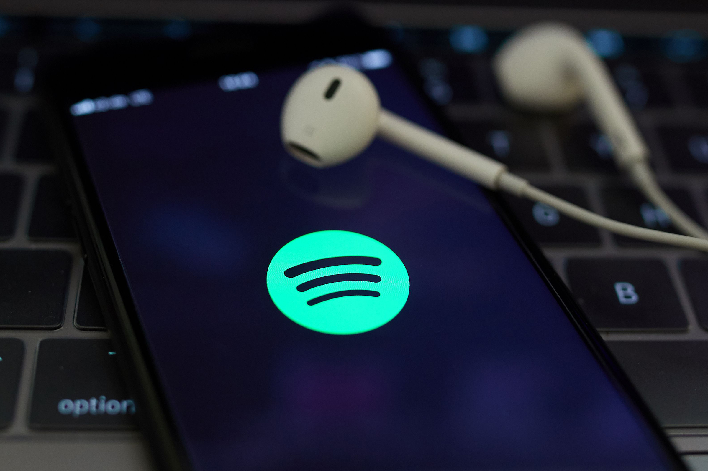

Sobre a plataforma
O Spotify é uma plataforma de música online, podendo ser usada em celulares, computadores, televisões e outros aparelhos eletrônicos. As músicas presentes nele podem ser ouvidas de forma online ou offline, dependendo se o usuário possui assinatura ou não. Ademais, o sistema também se adapta aos gostos do usuário, oferecendo várias playlists que se adequam ao que este escutou ao longo das últimas semanas.
